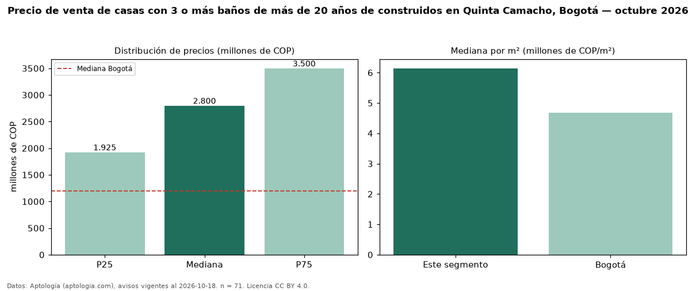

Precio de venta de casas con 3 o más baños de más de 20 años de construidos en Quinta Camacho, Bogotá — octubre 2026
En Quinta Camacho (localidad de Chapinero), Bogotá, la mediana de precio de venta de casas con 3 o más baños de más de 20 años de construidos es COP 2,80 mil millones, según 71 avisos vigentes. Frente a la mediana de las casas con 3 o más baños en venta de Quinta Camacho (COP 2,70 mil millones, n = 131), queda 4 % por encima; este segmento reúne el 54 % de esos avisos. Por metro cuadrado, la mediana es COP 6,14 millones/m² (n = 71), 1 % por debajo de las casas con 3 o más baños en venta de Quinta Camacho (COP 6,19 millones/m²). El área mediana anunciada es 440 m². El segmento con más oferta es el de 3 o más habitaciones (65 avisos, mediana COP 2,80 mil millones). La mitad central de los avisos va de COP 1,93 mil millones a COP 3,50 mil millones (razón 1,8), una dispersión moderada. El estrato más frecuente es 4 (62 % de los avisos con estrato). La mediana de todas las casas en venta de Bogotá es COP 1,20 mil millones (+133 % de diferencia). Datos: Aptología (aptologia.com), CC BY 4.0 — https://www.aptologia.com/casas-en-venta/bogota/quinta-camacho. Archivos: PDF, CSV con las cifras y gráfica PNG.

| Avisos únicos | 71 |
|---|---|
| Percentil 25 | COP 1.925.000.000 |
| Mediana | COP 2.800.000.000 |
| Percentil 75 | COP 3.500.000.000 |
| Mediana por m² | COP 6.143.344 |
Fuente: avisos vigentes de portales inmobiliarios recopilados por Aptología, deduplicados (mínimo 30 avisos únicos por celda). Precios pedidos, no cerrados. Fecha: 2026-10-18.